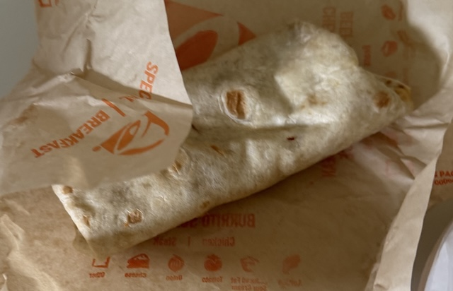

1991 – 2026 · A 35-year value audit
How the cheapest item on America's cheapest menu quietly became a case study in vanishing value — outrunning inflation, lapping the minimum wage, and taking Taco Bell's value crown with it.
You should edit the website, cross everything out, and write “update: my fuckass son didnt even eat the goddamn thing”
Exhibit A · The burrito itself

+655% since 1991In 1991 it sold for 29¢. If the 29¢ price had merely tracked overall inflation (CPI, ~2.4×), it would cost about 70¢ today.
Exhibit B · Three trajectories
Baselined at the 29¢ promotional price of 1991; later points are regular menu prices (national-average estimates — Taco Bell pricing is franchise-set and varies by market). Even measured from the everyday 59¢ price, the burrito still grew 3.7× against 2.4× inflation.
Exhibit C · Priced in minutes of your life
The federal minimum wage has been $7.25 since 2009 — the longest freeze in its history. Even at the ~$10–13/hr fast-food restaurants actually pay to retain workers, an hour buys fewer burritos today than a minimum-wage hour did in 1991.
Exhibit D · The competition, 2014–2024
┊ dashed line = actual CPI inflation for the same decade: +31%
Facing the same labor market and the same food costs, chains chose very differently. Taco Bell chose the third-steepest climb of any major chain — a striking choice for the brand whose entire identity was being the cheapest.
Exhibit E · The icons, then and now
2014 vs. current national-average prices. Every flagship item at least doubled — against +31% inflation for the same period.
Exhibit F · Field evidence
Three items off the regular menu — nothing supreme, nothing loaded, nothing luxe — now costs what a casual sit-down lunch used to.
Scale it up and the math turns brutal:
A family of four, ordering modestly with drinks, now runs $60–70 at the "value" chain.
Taco Bell was the king of fast-food value because the gap between what you paid and what you got was the widest in the industry. That gap — not the raw price — was the product.
Over 35 years the burrito's price grew 7.6× from its 29¢ promo era (3.7× from the 59¢ regular price), inflation grew 2.4×, and the minimum wage grew 1.7×. The remaining "value" migrated into app deals and rotating boxes — meaning the walk-in customer, the average person this brand was built on, now pays the highest effective prices in its history.